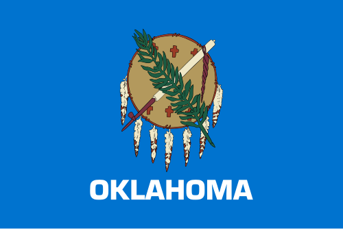

The flag of the U.S. state of Oklahoma, also known as the Oklahoma flag, is a rectangular field of sky blue on which is placed an Osage war shield with six crosses and seven pendant eagle feathers above the name of the state in a white Eurostile text in all capitals. Superimposed onto the crosses of the war shield is a calumet (peace pipe) and an olive branch.
Source: Wikepedia: Flag of Oklahoma
What does the symbolism in the flag stand for?
- The Sky-blue Background: The devotion and loyalty of its people. It is the same color used on the background of the Choctaw Nation flag that was flown by Native American Soldiers during the Civil War.
- The Brown Circle: Representative of an Osage Nation buffalo-skin shield with seven eagle feathers hanging off of the bottom.
- Native American Peace Pipe and Olive Branch: Symbols of peace for Native Tribes and European Descendants, respectively. The two symbols are positioned to form a diagonal cross, representing peace across cultures
- The Six Golden-brown Crosses: The crosses represent stars in Native American cultures, which symbolize high hopes.
Source: Flagdom Page